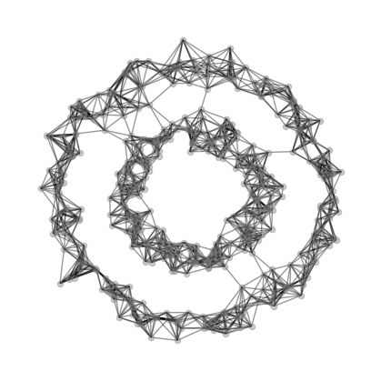
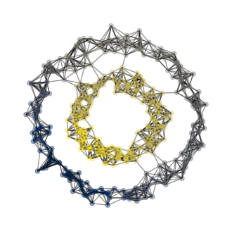
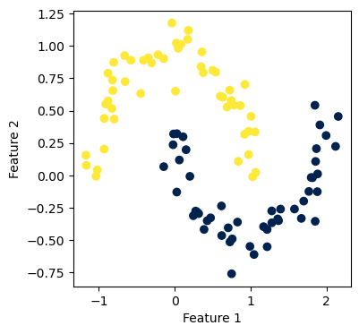

%load_ext autoreload
%autoreload 2# %reload_ext autoreloadLink to Source Code
Hereis a link to the source code for this post.
Link to reference for this blog post
Here is a link to the main reference we use as we implement this post.
Part I: Image Compression with the Singular Value Decomposition
We use the image of a cat which can be accessed here for free download: www.pexels.com. I have already downloaded a copy of an image of a tabby cat, and I have stored it in the same directory as this jupyter notebook.
from matplotlib import pyplot as plt
import numpy as np
np.random.seed(42)
import PIL
from PIL import Image
import urllib
def read_image(url):
return np.array(PIL.Image.open(urllib.request.urlopen(url)))
# url = "https://images.pexels.com/photos/1170986/pexels-photo-1170986.jpeg?cs=srgb&dl=pexels-evg-kowalievska-1170986.jpg&fm=jpg"
# myimg = read_image(url)# open the image from working directory
img = Image.open("./tabby_cat.png")
print(f"format: {img.format}")
print(f"size: {img.size}")
print(f"mode: {img.mode}")
# convert PIL images into numpy arrays.
myimg = np.asarray(img)format: JPEG
size: (1771, 2657)
mode: RGBfig, axarr = plt.subplots(1, 2, figsize = (7, 3))
def to_greyscale(im):
return 1 - np.dot(im[...,:3], [0.2989, 0.5870, 0.1140])
grey_img = to_greyscale(myimg)
axarr[0].imshow(myimg)
axarr[0].axis("off")
axarr[0].set(title = "original")
axarr[1].imshow(grey_img, cmap = "Greys")
axarr[1].axis("off")
axarr[1].set(title = "greyscale")[Text(0.5, 1.0, 'greyscale')]print(grey_img.shape[0])
print(grey_img.shape[1])2657
1771from hidden_images import svd
svd1 = svd()
k = 18
A_ = svd1.reconstruct(grey_img, k)
svd1.compare_images(grey_img, A_)
svd1.experiment(grey_img) Part II: Spectral Community Detection
import networkx as nx
G = nx.karate_club_graph()
layout = nx.layout.fruchterman_reingold_layout(G)
nx.draw(G, layout, with_labels=True, node_color = "steelblue")We need to return a vector of binary labels to split the graph.
clubs = nx.get_node_attributes(G, "club")
nx.draw(G, layout,
with_labels=True,
node_color = ["orange" if clubs[i] == "Officer" else "steelblue" for i in G.nodes()],
edgecolors = "black" # confusingly, this is the color of node borders, not of edges
) Implementing Laplacian Spectral Clustering
from sklearn.datasets import make_blobs, make_circles
from matplotlib import pyplot as plt
import numpy as np
np.random.seed(12345)
fig, ax = plt.subplots(1, figsize = (4, 4))
X, y = make_blobs(n_samples=100, n_features=2,
centers=2, random_state=1)
a = ax.scatter(X[:, 0], X[:, 1])
a = ax.set(xlabel = "Feature 1", ylabel = "Feature 2")
np.random.seed(42)
n = 500
X, y = make_circles(n_samples=n, shuffle=True, noise=0.07, random_state=None, factor = 0.5)
fig, ax = plt.subplots(1, figsize = (4, 4))
a = ax.scatter(X[:, 0], X[:, 1])
a = ax.set(xlabel = "Feature 1", ylabel = "Feature 2")
from sklearn.neighbors import NearestNeighbors
k = 10
nbrs = NearestNeighbors(n_neighbors=k).fit(X)
A = nbrs.kneighbors_graph().toarray()
# symmetrize the matrix
A = A + A.T
A[A > 1] = 1import networkx as nx
from hidden_spectral import spectral
spec = spectral()
spec.plot_graph(X, A)
# fig, axarr = plt.subplots(1, 2, figsize = (8, 4))
y_bad = np.random.randint(0, 2, n)
# plot_graph(X, A, z = y, ax = axarr[0])
# plot_graph(X, A, z = y_bad, ax = axarr[1])from sklearn.neighbors import NearestNeighbors
from sklearn.metrics import pairwise_distances
def cut(A, z):
D = pairwise_distances(z.reshape(-1, 1))
return (A*D).sum()
print(f"good labels cut = {cut(A, z = y)}")
print(f"bad labels cut = {cut(A, z = y_bad)}")
def cut(A, z):
D = pairwise_distances(z.reshape(-1, 1))
return (A*D).sum()
print(f"good labels cut = {cut(A, z = y)}")
print(f"bad labels cut = {cut(A, z = y_bad)}") good labels cut = 22.0
bad labels cut = 3000.0
good labels cut = 22.0
bad labels cut = 3000.0Use a theorem from linear algebra
\(z\) should be the eigenvector with the second smallest eigenvalue of the matrix \[L = D^{-1}\left[ D-A \right]. \] This matrix \(L\) is called the normalized Laplacian.
from hidden_spectral import spectral
spec = spectral()
fig, ax = plt.subplots(figsize = (4, 4))
z_ = spec.second_laplacian_eigenvector(A=A)
spec.plot_graph(X, A, z=z_, ax = ax, show_edge_cuts = False)
z = z_ > 0
fig, ax = plt.subplots(figsize = (4, 4))
spec.plot_graph(X, A, z, show_edge_cuts = True, ax = ax)
from sklearn.datasets import make_moons
H, z = make_moons(n_samples=100, random_state=1, noise = .1)
fig, ax = plt.subplots(figsize = (4, 4))
a = ax.scatter(H[:, 0], H[:, 1])
a = ax.set(xlabel = "Feature 1", ylabel = "Feature 2")
fig, ax = plt.subplots(figsize = (4, 4))
z = spec.spectral_clustering(H, n_neighbors = 6)
a = ax.scatter(H[:, 0], H[:, 1], c = z, cmap = plt.cm.cividis)
a = ax.set(xlabel = "Feature 1", ylabel = "Feature 2")
\[\mathcal{L}(a, b) = \sum_{i = 1}^n (ax_i + b - y_i)^2\;.\]
Testing
L = np.diag([4,5,22,2,3])
# print(L)
evalue, evector = np.linalg.eig(L)
print("evalue")
print(evalue)
print("evector")
print(evector)
k = L.shape[1]
idx = evalue.argsort()[:k][::-1]
evalue = evalue[idx]
evector = evector[:, idx]
print("evalue after change")
print(evalue)
print("evector after change")
print(evector)
index = evector.shape[1]
print("col")
print(evector[:,index-2])evalue
[ 4. 5. 22. 2. 3.]
evector
[[1. 0. 0. 0. 0.]
[0. 1. 0. 0. 0.]
[0. 0. 1. 0. 0.]
[0. 0. 0. 1. 0.]
[0. 0. 0. 0. 1.]]
evalue after change
[22. 5. 4. 3. 2.]
evector after change
[[0. 0. 1. 0. 0.]
[0. 1. 0. 0. 0.]
[1. 0. 0. 0. 0.]
[0. 0. 0. 0. 1.]
[0. 0. 0. 1. 0.]]
col
[0. 0. 0. 0. 1.]